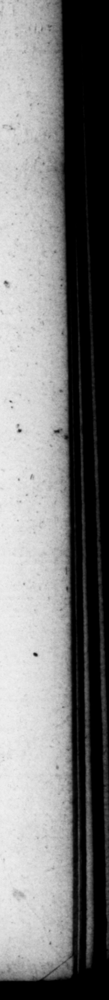

- ”. 7 - D. O CTA. AUGUST. _ Poſiquam bis claſſe Aliguando ut wvincat, victus naves perdidit, ludit aſfidue aleam: Having twice loft a fleet in luckleſs a night To beat at laſt, 71. Ex quibus five criminibus five maled ictis, infamiam impudicitiæ faclllime refutavit, & prelentis & poſteræ vitæ caſticaze. Item lautitiarum invidkm, cum & Alex andria capfa, nihil ſibi præter unum murrhinum calicem ex inſtrumento regio, retinuerit, & mox vaſa aurea aſliduiſſimi ulus : con flaverit omnia. Circa libidines hæſit: poſtea quoque, ut ferunt, ad vitiandas virgines promptior, que? ſibi undique etiam ab uxore conquirereptur, Alem rumorem nullo modo expavit: luſitque ſimpliciter & palam oblectamenti cauſa etiam ſenex, ac præterquam Decembri menſe, aliis quoque feſtis profeſtiſque diebu*, Nec id dubium eſt: autographa quadam epiſtola, Cænavi, ait, mi Tiberi cum iiſdem. Acceſſerunt con vive Vinicius & Silvius pater. Inter, canam luſimus ytewrinus & beri & hodie. Talis ehim jactatis, ut quiſque canem, aut ſenionem miſerat, in ſingulos talos fingulos denarios in medium conferebat. quos trllebat univerſos qui Venerem je · cerat, Et rurſus aliis litteris, Nos, mi Tiberi, Quinquatriis ſatis jucunde egimus, Luſimiss enim per omnes dies, forumque aleatirium calfeci mus. Frater tuus magnis clamoribus rem Feſſit. Ad ſummam tamen perdidit non multum e ſed ex magnis detrimentis preter ſpem paullatim retractus et. Ege perdi di ginti millia nummum meo nomine + ſed cum effuſe in luſu liberali⸗ of ut ſoleo flerumque. Nam fs, quas manus remiſs cuique, exegifſem, he games. both day a 7. Of all which, whether crimes or calumnies, be very eafel ö a aſide © the infamous charge of bal ele, by th: chaſtity of his hife at the wery time of the charge, and ever after as he did alſo chat of w luxurious extravagance in kit furniture, when | upin the taking of Alexandria, be reſerved nothing of al the furniture of the palace there for himſelf, but 4 cup porcelain ; and Joon after melted down at the gold veſſels, even ſuch as were for common uſ:. But he cauld never get over the imputation of lewdneſs with women, being as they ſay, in tbe latter part of his life very inclinable to the d. 71 of virgins, which were procured for him from alt parts by bis lady. The t bus gaming he regarded not at all, but. play'd frankly and openly for his diverſion, even when he was an old. man, and not only in the mon:h of December, but a: other times, and upon all days, whether feſtivals or not. And this plainly appears from à letter under his own hand, I ſupped, ſays be, my dear Tiberius, with the ſame company. We had beſides Viniciue, and Silvius the father, We gamed like old fellows at ſupper, both yeſterday and to day. And as any one threw upon the tali aces or ſiz he put down for every talus a denarius ; all which he got that threw a Vcnus, And again in another letter. We had, my dear Tiberius, a pleaſant time of it, during the — of mige _ — play'd every day, an the —.— board no Wing Your brother managed his bufineſs with terrible outer ies, hut in the upſhot loſt not much, recovering himſelf by degrees, and unexpectedly from the effects of a deſperate run of ill fortune. I loſt twenty thouſand ſeſterces for my part; but then I wag rofuſely generous in my play, as I 6 2! ha ä 1 | Py |
